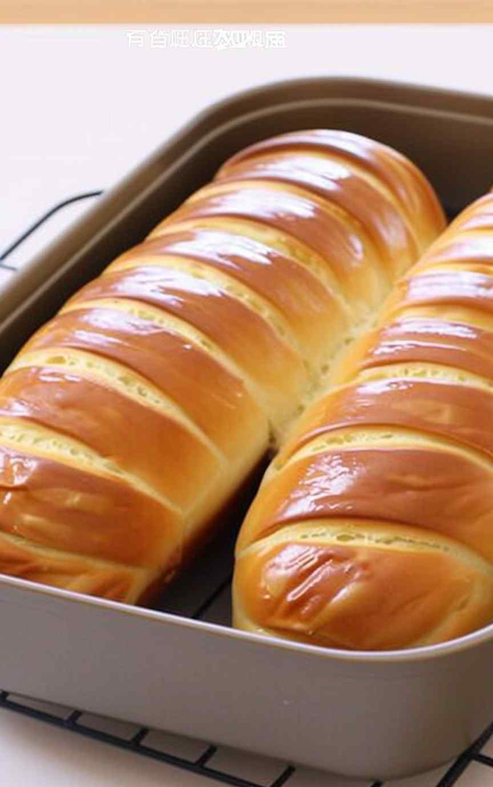

This buttery soft bread has a melt-in-your-mouth texture and a rich flavor perfect for dinner rolls, sandwiches, or simply enjoying warm with more butter.
It stays tender and has a light, fluffy crumb you'll love.
What makes it especially surprising and special is that it can all be done in the comfort of your home 😋
Bloom the yeast - In a small bowl, combine lukewarm water, yeast, and 1 tsp sugar. Let sit for 10 minutes until foamy. Why:This activates the yeast, ensuring it's alive and ready to make the bread rise.
Mix dry ingredients - In a large mixing bowl, combine flour, sugar, and salt. Why:Evenly mixing the dry ingredients ensures consistent flavor and texture.
Add wet ingredients - Pour in the milk, eggs, and bloomed yeast mixture. Mix with a stand mixer until combined. Why:Using a mixer ensures a smooth, lump-free dough and evenly distributes ingredients.
Add butter/margarine - Mix in the butter and knead with the mixer for 10 minutes until smooth and elastic. Why:Kneading develops gluten for structure, while butter makes the bread soft and flavorful.
First rise - Remove dough from the bowl, dust the kneading surface with flour, then lightly oil the bowl. Place the dough back, cover, and let rise for 1 hour 30 minutes. Why:The first rise allows the dough to double in size, developing flavor and texture.
Shape the dough - Punch down to release air, dust with flour, divide in half, and roll each piece into a rectangle. Place in greased loaf pans. Why:Rolling creates an even crumb, and shaping before the second rise ensures the loaf structure.
Second rise - Cover pans and let dough rise for 1 hour until puffy. Why:This final proofing creates a light, airy texture.
Egg wash - Brush tops with beaten egg. Why:The egg wash gives the bread a glossy, golden finish.
Bake - Preheat oven to 350°F and bake for 25-30 minutes until golden and hollow-sounding when tapped. Why:Proper temperature ensures even baking and prevents a doughy center.
Cool and serve - Remove from pans and let cool on a wire rack before slicing. Why:Cooling prevents the bread from becoming gummy and helps slices hold shape.
Ingredients:
6 tbsp lukewarm water (around 110°F - warm enough to activate yeast but not kill it)
4 tsp active dry yeast
1 tsp sugar (to feed the yeast during blooming)
6 cups all-purpose flour
5 tbsp sugar (for sweetness and browning)
2 tsp salt (for flavor balance and gluten strengthening)
1 1/2 cups milk (room temperature for even mixing)
2 large eggs (for richness, softness, and structure)
1/3 cup butter or margarine (for moisture, softness, and flavor)
Extra flour (for dusting)
1 egg (for egg wash)

Final look after baking the bread.
For more information and to see how the recipe is made, you can watch this video while following the instructions: